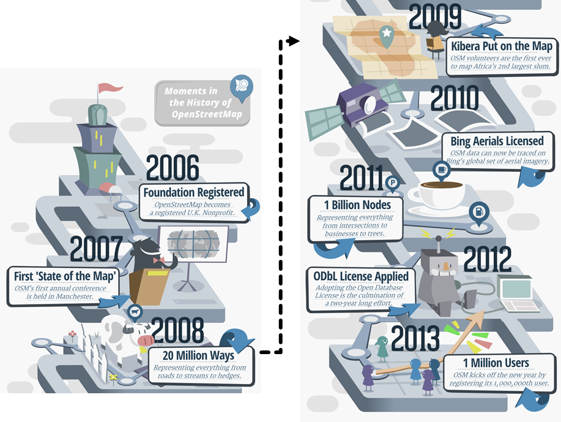
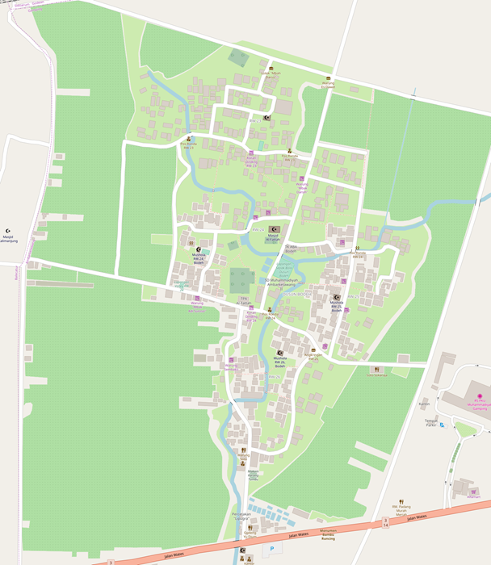
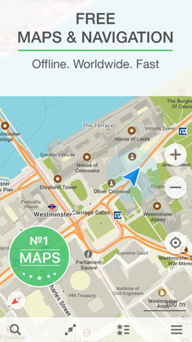

Pengenalan OpenStreetMap
Download page as PDFTujuan Pembelajaran:
- Mampu menjelaskan pengertian OpenStreetMap
- Mampu menjelaskan sejarah terbentuknya OpenStreetMap
- Mampu menjelaskan keuntungan menggunakan OpenStreetMap
- Mampu menjelaskan pemanfaatan OpenStreetMap
- Mampu menjelaskan konsep dasar peta dan OpenStreetMap
Sekarang ini banyak orang yang menggunakan peta digital, namun masih sedikit yang menggunakan peta digital terbuka. Peta digital terbuka memiliki sifat yang gratis dan dapat diedit oleh siapa saja. Salah satu peta digital terbuka adalah OpenStreetMap. Pada modul ini, Anda akan mempelajari segala sesuatu mengenai OpenStreetMap.
I. Pengertian OpenStreetMap
OpenStreetMap adalah peta digital seluruh dunia yang bersifat bebas, terbuka dan dapat diubah oleh siapapun. Dengan sifatnya yang digital, siapapun dapat mengakses OpenStreetMap dimanapun secara gratis. Data OpenStreetMap memiliki lisensi ODbL, sedangkan kartografi/tampilan peta OpenStreetMap memiliki lisensi CC-BY-SA yang memungkinkan para penggunanya untuk dapat membagikan, mencipta dan mengadaptasi data OpenStreetMap selama mencantumkan sumber dengan cara menuliskan “© OpenStreetMap contributors” serta memiliki lisensi yang sama dan bersifat terbuka. Konsep berbagi data sangat berguna untuk masyarakat apalagi untuk data yang sulit diperoleh ataupun diakses. Dengan menggunakan OpenStreetMap, Anda dapat berbagi data spasial dimana data tersebut dibuat dan berasal dari pengguna lain dan sebaliknya pengguna lain pun dapat menggunakan data yang Anda buat. OpenStreetMap juga memungkinkan Anda untuk menciptakan suatu produk dari data OpenStreetMap hingga memodifikasi data tersebut.

Logo OpenStreetMap
II. Sejarah OpenStreetMap
OpenStreetMap pertama kali digagas oleh Steve Coast pada tahun 2004. Pada saat itu, Steve merasa data dari Ordnance Survey (Badan Survei dan Pemetaan di Inggris) sangat mahal dan sulit untuk diperoleh. Kemudian Steve dan beberapa orang lainnya mendirikan OpenStreetMap agar orang-orang di seluruh dunia dapat membuat peta digital untuk komunitas atau masyarakat dan menyimpannya di sebuah database bersama. Tahun 2006, OpenStreetMap diregistrasikan menjadi organisasi nonprofit di Inggris. Pada tahun 2007, pertama kalinya diselenggarakan konferensi tahunan oleh OpenStreetMap bertajuk “State of the Map” di Manchester, yang hingga sekarang diselenggarakan rutin setiap tahun di kota-kota berbeda di dunia. Tahun 2008, 20 juta garis yang merepresentasikan objek garis dari jalan, sungai, hingga pagar, sudah berhasil terpetakan di OpenStreetMap.
Tahun 2009, para sukarelawan berhasil memetakan Kibera di OpenStreetMap, sebuah kawasan kumuh kedua terbesar di Afrika. Tahun 2010, citra satelit Bing mulai dapat digunakan sebagai acuan pemetaan di OpenStreetMap. Tahun 2011, satu milyar titik/nodes dari persimpangan jalan hingga pohon, berhasil terpetakan di OpenStreetMap. Tahun 2011 juga merupakan tahun dimana OpenStreetMap mulai masuk ke Indonesia. Tahun 2012, ODbL mulai diaplikasikan ke OpenStreetMap yang memungkinkan penggunanya untuk bebas berbagi, bebas mencipta dan bebas mengadaptasi data OSM. Tahun 2013, pengguna OpenStreetMap sudah mencapai satu juta orang. Hingga saat ini, OpenStreetMap sudah memiliki lebih dari lima juta pengguna dari seluruh dunia.

Alur sejarah terbentuknya OpenStreetMap
III. Mengapa Memilih OpenStreetMap
Beberapa alasan mengapa sebaiknya Anda memilih OpenStreetMap adalah:
- OpenStreetMap bersifat terbuka dan gratis sehingga OpenStreetMap tidak akan meminta Anda membayar untuk menggunakannya. Banyak dari penyedia data spasial yang meminta Anda membayar untuk mendapatkan data spasial. OpenStreetMap dapat menjadi alternatif sumber data spasial yang bebas biaya. Dengan adanya OpenStreetMap, pengguna tidak perlu bergantung lagi dengan badan/instansi pemerintah atau penyedia data spasial lainnya untuk mendapatkan data spasial.
- Data OpenStreetMap juga lebih kaya dan lebih baru. Hal ini disebabkan karena setiap pengguna dapat menambahkan, mengubah dan menghapus data kapanpun dan dimanapun. Misalnya ada sebuah restoran yang sudah tidak ada di suatu tempat namun masih terpetakan di OpenStreetMap, Anda dapat dengan mudah menghapus restoran tersebut dari OpenStreetMap. Di beberapa tempat seperti di kota-kota besar data OSM nya akan cenderung lebih kaya, karena biasanya di daerah pedesaan belum ada pengguna yang memetakan daerah tersebut. Jadi, ketersediaan data dan pembaruan data akan sangat bergantung pada pengguna.
- Menggunakan OpenStreetMap relatif lebih mudah. OpenStreetMap menyediakan banyak sekali panduan untuk para pengguna yang baru memulai menggunakan OpenStreetMap. Selain itu, tampilan OSM yang user friendly memudahkan pengguna dalam menggunakan OpenStreetMap bahkan jika pengguna tidak memiliki latar belakang di bidang pemetaan.
- Peta OpenStreetMap dapat dimodifikasi sesuai keinginan. Semua data di dalam OpenStreetMap dapat Anda gunakan sesuai dengan kebutuhan. Misalnya Anda ingin membuat data lokasi pariwisata di tempat Anda, Anda bisa mengambil data OpenStreetMap dan hanya memunculkan destinasi pariwisata di tempat Anda tanpa harus memasukkan data OpenStreetMap yang lain.
IV. Pemanfaatan OpenStreetMap
Banyak sekali contoh penggunaan OpenStreetMap dalam berbagai bidang. Dengan OpenStreetMap, Anda dapat melengkapi data peta dan membuat peta di lokasi yang sudah familier dengan Anda misalnya dalam skala desa. Anda dapat memetakan secara detail karena setiap pengguna dimungkinkan untuk melakukan survei secara mandiri pada wilayah yang akan dipetakan. Berikut ini adalah contoh peta Dusun Bodeh di D.I. Yogyakarta yang dibuat oleh salah satu pengguna OpenStreetMap yang tinggal di dusun tersebut.

Contoh peta yang dibuat menggunakan OpenStreetMap
Data OpenStreetMap juga digunakan oleh salah satu Android Developer untuk membuat aplikasi android peta offline dunia yang bernama Maps Me. Aplikasi ini menggunakan data OpenStreetMap yang harus di-download terlebih dahulu kemudian Anda dapat menggunakan data tersebut secara offline untuk navigasi.

Tampilan aplikasi android Maps Me
OpenStreetMap juga dapat digunakan untuk membuat peta dampak suatu bencana. OpenStreetMap sudah sering digunakan sebagai alat memetakan daerah bencana yang kemudian datanya digunakan untuk menaksir dampak dari bencana tersebut. OpenStreetMap juga sering digunakan sebagai platform pemetaan untuk respon bencana karena sifat OpenStreetMap mendukung pemetaan partisipatif. Data OpenStreetMap juga dapat digunakan untuk membuat rute evakuasi serta titik-titik pengungsian, namun data OSM harus diolah terlebih dahulu menggunakan software SIG.
V. Konsep Dasar Peta dan OpenStreetMap
a. Konsep Peta Kertas
Peta adalah salah satu sarana penyampaian informasi yang efektif. Peta dapat merepresentasikan informasi lebih baik daripada kata-kata khususnya informasi mengenai objek di permukaan bumi. Untuk menjawab beberapa pertanyaan pun menjadi lebih efektif jika divisualisasikan dengan peta, seperti “Dimana letak SDN 01?” atau “Dimana letak rumah sakit terdekat?”. Biasanya jika ada pertanyaan seperti ini, jawabannya digambarkan menggunakan alat tulis dan kertas berupa peta kertas. Jalan biasanya digambarkan menjadi garis dan bangunan-bangunan biasanya digambarkan menjadi kotak. Tetapi penggambaran peta akan tergantung dari siapa yang menggambarkannya, karena gaya penggambaran objek setiap orang berbeda-beda.
b. Mengapa Beralih Ke Peta Digital
Penggunaan peta kertas, selain sulit untuk meyampaikannya ke orang lain karena mungkin peta tersebut hanya ada satu salinan, cara penggambaran petanya juga belum tentu dapat dipahami oleh orang lain. Peta kertas juga rawan rusak jika terkena air dan perlu tempat penyimpanan yang baik juga agar tidak rusak dan hilang. Inilah mengapa sebaiknya peta dibuat menjadi digital agar semua orang mudah mengaksesnya. Dengan menggunakan kemampuan komputer, data peta lebih mudah dipahami dan dibagikan. Peta digital juga memungkinkan Anda untuk menyesuaikan simbol peta sesuai kebutuhan. Selain itu, peta digital memungkinkan Anda untuk dapat menambahkan informasi yang tak terbatas pada objek yang dipetakan. Berbeda dengan peta kertas, Anda hanya dapat menuliskan informasi yang terbatas untuk objek tersebut karena tempat menuliskan informasinya juga terbatas. Dan yang lebih penting, ketika menambahkan objek, objek tersebut lokasinya tepat (lintang dan bujurnya) di bumi ini.
c. Komponen Peta Digital
Ketika menggambar objek-objek yang ada di permukaan bumi, objek-objek tersebut akan disimbolkan dengan titik, garis ataupun poligon tergantung dari objek yang digambarkan. Titik-titik penting (point of interest) seperti restoran, fire hydrant dan bank biasanya disimbolkan dengan titik. Simbol garis biasanya diberikan pada objek seperti jalan, sungai dan rel kereta. Garis merupakan kumpulan dari beberapa titik yang saling menyambung. Poligon biasanya digunakan untuk menggambarkan objek area seperti bangunan, danau dan penggunaan lahan. Poligon merupakan garis yang tertutup, jadi jika Anda menggambar poligon, titik awal garis harus menyatu dengan titik akhir garis.

Simbologi titik dari objek yang dipetakan di OpenStreetMap

Simbologi garis dari objek yang dipetakan di OpenStreetMap

Simbologi poligon dari objek yang dipetakan di OpenStreetMap
RINGKASAN
Jika Anda dapat memahami dan memperhatikan seluruh tahapan dalam bab ini, maka Anda dapat menjelaskan pengertian OpenStreetMap, menjelaskan sejarah terbentuknya OpenStreetMap serta menjelaskan keuntungan menggunakan OpenStreetMap. Selain itu, Anda juga dapat menjelaskan pemanfaatan OpenStreetMap dan menjelaskan konsep dasar peta dan OpenStreetMap. Pada modul-modul selanjutnya, Anda akan mempelajari bagaimana cara mengoperasikan OpenStreetMap untuk melakukan kegiatan pemetaan.